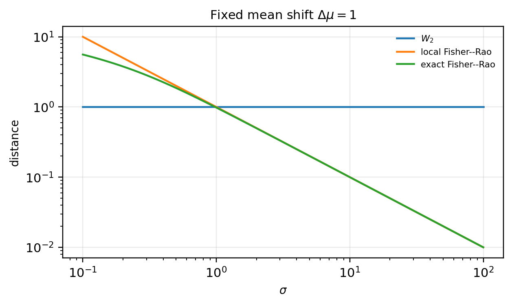

2026-05-16
Status: research note; not peer reviewed. The Gaussian Wasserstein and Fisher–Rao calculations below are standard. The examples are small diagnostics, not benchmarks. Their purpose is to isolate a modeling issue: Wasserstein loss measures discrepancy in the geometry supplied to it, and that geometry may or may not match the statistical meaning of the error.
Wasserstein distance has a clean promise: it compares probability distributions by asking how much mass must move, and how far it must move.
That is often exactly the right question. If the sample-space geometry is the geometry of the problem, then Wasserstein distance is natural. A meter is a meter. A pixel is a pixel. A coordinate displacement is a coordinate displacement.
But when Wasserstein distance is used as a statistical loss, there is a small trap:
\boxed{ \text{absolute displacement is not the same as scale-relative discrepancy.} }
Raw Wasserstein distance detects location shifts. What it does not automatically detect is whether a shift is large or small relative to the uncertainty, spread, or intrinsic scale of the distributions being compared.
We use three diagnostics.
The point is not that Wasserstein distance is wrong. The point is that Wasserstein distance answers a geometric question, and the geometry is part of the model.
Optimal transport is defined after choosing a cost for moving mass from one point to another. In the usual Wasserstein distance, this cost comes from a ground metric on the sample space; see Peyré and Cuturi (2019).
This is not an implementation detail. It is the geometry of the loss.
If the data are measured in meters, the loss sees meters. If the data are measured in pixels, the loss sees pixels. If the data are represented by coordinates, labels, features, embeddings, or point clouds, the loss sees whatever geometry has been assigned to those objects.
So the practical question is not only:
are we using Wasserstein distance?
It is also:
what geometry did we give to Wasserstein distance?
In some problems, absolute displacement is exactly the right notion of error. Moving mass by one physical unit may be the quantity that matters.
In other problems, the relevant question is scale-relative:
how large is this displacement relative to the uncertainty or intrinsic scale of the distribution?
Raw Euclidean Wasserstein distance answers the first question. It does not automatically answer the second.
Consider the univariate Gaussian family N(\mu,\sigma^2).
Let
P=N(\mu_1,\sigma^2), \qquad Q=N(\mu_2,\sigma^2).
For two Gaussians with the same variance, the squared 2-Wasserstein distance reduces to the squared difference between the means. This is a special case of the Gaussian Wasserstein formula; see Dowson and Landau (1982).
W_2^2(P,Q) = |\mu_1-\mu_2|^2.
Therefore,
W_2(P,Q) = |\mu_1-\mu_2|.
Now compare
N(0,0.1^2) \quad \text{versus} \quad N(1,0.1^2),
with
N(0,100^2) \quad \text{versus} \quad N(1,100^2).
In both cases the means differ by one, so
W_2=1.
But the scale-relative meaning is different.
For \sigma=0.1, the shift is ten standard deviations:
\frac{|\Delta \mu|}{\sigma} = \frac{1}{0.1} = 10.
For \sigma=100, the shift is one-hundredth of a standard deviation:
\frac{|\Delta \mu|}{\sigma} = \frac{1}{100} = 0.01.
The Wasserstein value is the same. The statistical interpretation is not. This does not mean that Wasserstein distance is blind to variance in general. It means that, in this equal-variance location comparison, the same absolute displacement receives the same Wasserstein cost regardless of whether that displacement is statistically large or small.
The Fisher–Rao metric gives a different geometry on a statistical model.
It is not a universal replacement for Wasserstein distance. It is useful here because it encodes the intrinsic statistical scale of the Gaussian family.
For N(\mu,\sigma^2), the Fisher–Rao line element is
ds^2 = \frac{d\mu^2+2d\sigma^2}{\sigma^2}.
For a small location perturbation with \sigma fixed,
ds \approx \frac{|d\mu|}{\sigma}.
Thus a one-unit displacement is large when \sigma=0.1 and small when \sigma=100.
The contrast is:
\text{raw Wasserstein location cost} \sim |\Delta \mu|,
whereas locally,
\text{Fisher--Rao location cost} \sim \frac{|\Delta \mu|}{\sigma}.
Wasserstein distance measures displacement in the external sample-space geometry. Fisher–Rao distance measures displacement in the internal statistical geometry of the model.
They are not contradicting each other. They are measuring different geometries.
For equal-variance univariate Gaussians, the exact Fisher–Rao distance is
d_{\mathrm{FR}} \left( N(\mu_1,\sigma^2), N(\mu_2,\sigma^2) \right) = \sqrt{2}\, \operatorname{arcosh} \left( 1+ \frac{(\mu_1-\mu_2)^2}{4\sigma^2} \right).
This agrees locally with
d_{\mathrm{FR}} \approx \frac{|\mu_1-\mu_2|}{\sigma}
when the displacement is small relative to \sigma; see Pinele, Strapasson, and Costa (2020).
The appearance of the \operatorname{arcosh} term is geometric. After the change of variables
x=\frac{\mu}{\sqrt{2}}, \qquad y=\sigma,
the Fisher–Rao line element becomes
ds^2 = 2\frac{dx^2+dy^2}{y^2}.
So the univariate Gaussian Fisher–Rao geometry is, up to a constant factor, the Poincaré upper half-plane geometry.
This exact formula is not needed for the modeling point. The local diagnostic already shows the issue:
W_2 = |\Delta \mu| \qquad \text{but} \qquad d_{\mathrm{FR}} \text{ depends on } \frac{|\Delta \mu|}{\sigma}.
Let \Delta \mu = 1.
| pair | \sigma | W_2 | FR local | FR exact |
|---|---|---|---|---|
| N(0,0.1^2) vs N(1,0.1^2) | 0.1 | 1 | 10 | 5.587 |
| N(0,100^2) vs N(1,100^2) | 100 | 1 | 0.01 | 0.01 |
The Wasserstein value is unchanged. The Fisher–Rao diagnostic changes dramatically.
For \sigma=0.1, the local Fisher–Rao value is not meant to be a precise numerical approximation, because the shift is large relative to the scale. The qualitative conclusion is unchanged: both the local and exact Fisher–Rao quantities regard the narrow Gaussian shift as much larger than the wide Gaussian shift.
A continuous version of the same diagnostic is shown below.

Wasserstein distance can be made scale-aware.
But scale awareness does not appear for free. It must enter through the ground geometry.
In the Gaussian example, suppose we measure displacement not by the raw Euclidean cost |x-y|, but by the standardized cost
\frac{|x-y|}{\sigma}.
Equivalently, transport the rescaled variable
z=\frac{x}{\sigma}.
Then the Wasserstein distance between
N(0,\sigma^2) \quad \text{and} \quad N(1,\sigma^2)
in standardized coordinates is
\frac{1}{\sigma}.
So for \sigma=0.1, the standardized transport distance is 10.
For \sigma=100, it is 0.01.
This gives the scale-relative quantity. But it is not the raw Wasserstein distance in the original coordinate system. It is Wasserstein distance after changing the geometry.
In this equal-variance example, the rescaling is unambiguous. If the two distributions have different scales, the choice of normalization becomes part of the modeling problem.
That is the main lesson:
\boxed{ \text{the ground cost is part of the statistical meaning of the loss.} }
Suppose a model outputs a predictive distribution.
Then the scale parameter is not decoration. A wide predictive distribution says that the model is uncertain. A narrow predictive distribution says that the model is confident.
Now suppose the predicted mean is wrong by one unit. Should the loss treat that error the same in both cases?
For the equal-variance Gaussian comparison above, raw Euclidean Wasserstein loss says yes for the location term. A Fisher-type geometry says no.
A likelihood-based loss would also treat the same residual differently depending on \sigma, because a one-unit error has a different meaning under a sharp predictive distribution than under a diffuse one.
This does not mean that likelihood, Fisher–Rao distance, or Wasserstein distance is universally better. It means they encode different meanings of error.
There is also a distinction between comparing two distributions and comparing a distribution to a point observation. If P=N(\mu,\sigma^2) and Q=\delta_y, then
W_2^2(P,Q) = (\mu-y)^2+\sigma^2.
So Wasserstein distance does see predictive spread in this setting. But it sees spread as transport cost to collapse a distribution onto a point. That is different from treating \sigma as calibrated uncertainty in the likelihood or Fisher-geometric sense.
The practical question is therefore:
does the Wasserstein loss measure the kind of error the task cares about?
Sometimes the answer is yes. If moving mass by one meter, one dollar, or one pixel has the same meaning regardless of predictive uncertainty, then absolute transport cost is natural.
Sometimes the answer is no. If the task cares about errors relative to predictive uncertainty, then raw Wasserstein loss may have the wrong scale.
The same issue appears when Wasserstein distance is used on unscaled data.
Suppose one coordinate is measured in dollars and another in percentages. Or suppose one feature has variance 10^{-2}, while another has variance 10^4.
A Wasserstein loss built from the raw Euclidean ground cost inherits those units. It may emphasize coordinates with larger numerical scale, even when those coordinates are not more meaningful for the task.
This is the same issue practitioners already know from feature scaling: a Euclidean cost on raw coordinates inherits raw units. Wasserstein loss does the same because its ground cost does the same.
In raw coordinates,
W_2 = |\Delta \mu|.
In standardized coordinates,
W_2 = \frac{|\Delta \mu|}{\sigma}.
Both are Wasserstein distances. They differ because the geometry differs.
This warning is not a criticism of Wasserstein distance.
It is a modeling fact: whenever a Wasserstein-type loss is applied, the chosen ground geometry becomes part of the loss.
This issue can arise in several standard settings:
In each case, the practical question is not only:
are we using Wasserstein distance?
It is also:
what geometry did we give to Wasserstein distance?
A Wasserstein loss on coordinates, pixels, labels, features, embeddings, or point clouds is not automatically wrong. But it is automatically tied to the metric and scale structure of those objects.
There is no universal fix, because the right geometry depends on the problem.
Useful options include:
The important point is not that one of these choices is always correct. The important point is that a choice is being made.
A useful diagnostic question is:
If I multiply one coordinate by 100, should the loss care 100 times more about errors in that coordinate?
If the answer is no, the raw ground geometry may not be the right geometry.
Wasserstein distance is not the problem.
The interpretation is the problem.
The correct statement is:
In the equal-variance Gaussian diagnostic, raw Wasserstein distance reports the absolute location shift.
The stronger statement is not automatic:
Wasserstein distance measures whether a location shift is large relative to uncertainty.
For equal-variance Gaussians under the usual Euclidean ground metric, a unit mean shift has Wasserstein distance one, regardless of whether the standard deviation is 0.1 or 100.
That is not a defect. It is the geometry.
Raw Wasserstein distance reports that both pairs require one unit of transport in the chosen sample-space geometry. Whether that one unit is statistically large or statistically small is a different question.
That second question requires a different geometry, a rescaled ground cost, or an additional statistical loss.
The practical question is:
\boxed{ \text{Should the loss measure absolute displacement, or scale-relative discrepancy?} }
When the answer is absolute displacement, Wasserstein distance may be exactly the right tool.
When the answer is scale-relative discrepancy, raw Wasserstein loss may have the wrong scale.
Shun-ichi Amari. Information Geometry and Its Applications. Springer, 2016.
D. C. Dowson and B. V. Landau. “The Fréchet distance between multivariate normal distributions.” Journal of Multivariate Analysis 12(3), 1982.
Yoni Dukler, Wuchen Li, Alex Lin, and Guido Montúfar. “Wasserstein of Wasserstein loss for learning generative models.” Proceedings of the 36th International Conference on Machine Learning, 2019.
Haoqiang Fan, Hao Su, and Leonidas J. Guibas. “A point set generation network for 3D object reconstruction from a single image.” Proceedings of the IEEE Conference on Computer Vision and Pattern Recognition, 2017.
Charlie Frogner, Chiyuan Zhang, Hossein Mobahi, Mauricio Araya-Polo, and Tomaso Poggio. “Learning with a Wasserstein loss.” Advances in Neural Information Processing Systems, 2015.
Aude Genevay, Gabriel Peyré, and Marco Cuturi. “Learning generative models with Sinkhorn divergences.” Proceedings of the Twenty-First International Conference on Artificial Intelligence and Statistics, 2018.
Gabriel Peyré and Marco Cuturi. Computational Optimal Transport. Foundations and Trends in Machine Learning 11(5–6), 2019.
Julia Pinele, João E. Strapasson, and Sueli I. R. Costa. “The Fisher–Rao distance between multivariate normal distributions: Special cases, bounds and applications.” Entropy 22(4), 2020.
@misc{miryusupov2026wassersteingeometry,
author = {Miryusupov, Shohruh},
title = {When Wasserstein Loss Uses the Wrong Geometry},
year = {2026},
howpublished = {Research note},
url = {https://www.miryusupov.com/blog/posts/wasserstein-wrong-geometry/index.html}
}